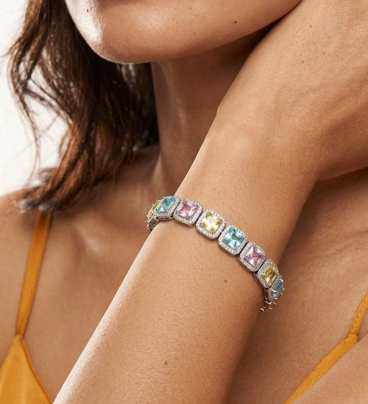
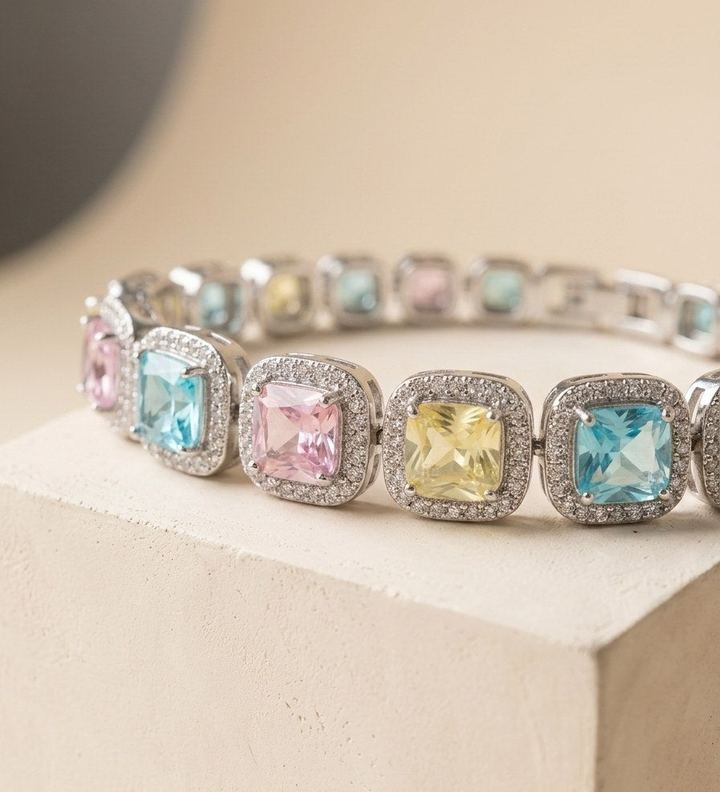
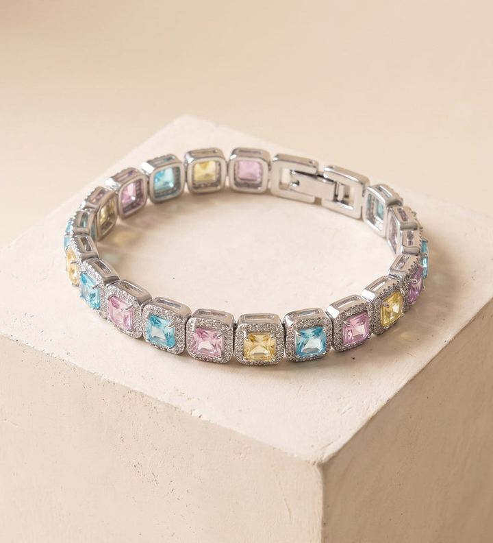
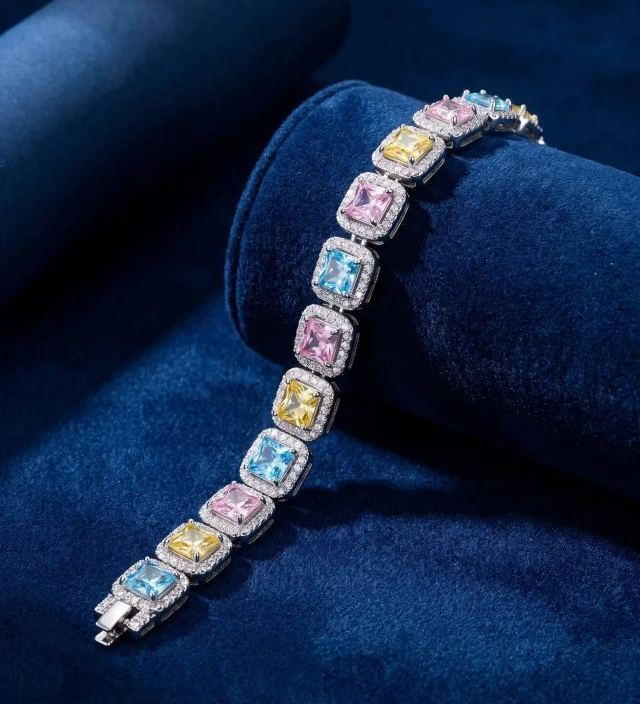
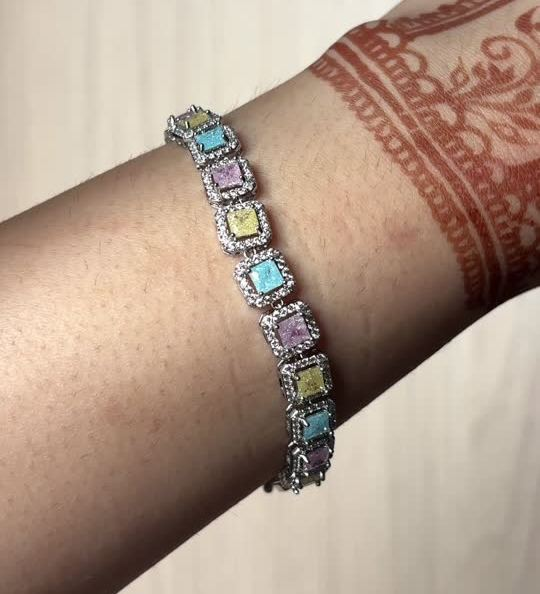
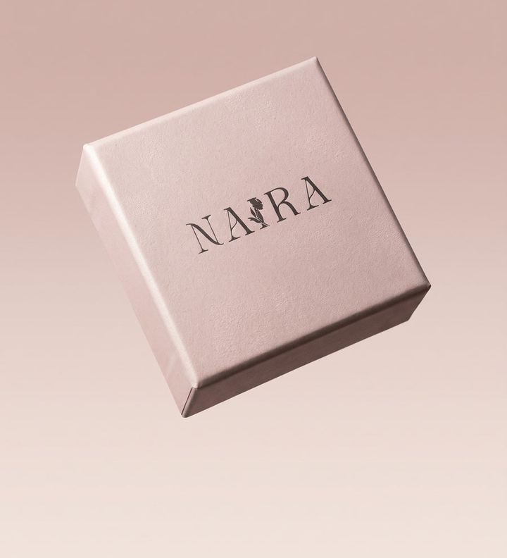
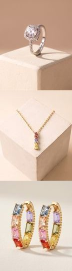

Arrow keys move between photos; Enter shows one full screen.
Prism Rivière Bracelet
Mix any pieces, no code · the bracelet's price
- 2 pieces · 10% off₹2,159
- 3 pieces · 20% off₹1,919
- 4 pieces · 30% off₹1,679
Free insured delivery, est. 18–20 Nov · COD available
- Questions before you buy? WhatsApp +91 95615 57935@naira.flore
- Faulty piece? Tell us on WhatsApp within 7 days of delivery, with photos, for a repair, replacement or store credit. Read the policy
- Surgical steel, PVD rhodium coating. Waterproof and tarnish free, so daily wear and water are fine.
Wear it as a set
The Cushion Halo Ring matches it in rhodium; the Prism necklace and hoops are gold tone.
With the bracelet in your bag

Cushion Halo Ring₹999PVD rhodium, like the braceletAdjustable, US 5–9-
Prism Pear Drop Necklace₹999PVD 18K gold coating
-
Prism Emerald-Cut Hoops₹1,299Gold tone
Every stone in its own halo
- Stones
- Cushion-cut pastel cubic zirconia, about 5 mm each
- Setting
- Each stone in a fine clear pavé halo, linked in a continuous line
- Colours
- Aqua blue, soft pink and pale yellow, repeating
- Metal
- Surgical stainless steel with a PVD rhodium coating
- Length
- 18 cm
- Fits
- Wrists of 15 to 19 cmAsk on WhatsApp about your wrist size
- Clasp
- Fold-over
- Box
- Naira Petite gift box
As Riya wears it
Riya, a creator we collaborated with, styling it with mehendi.
Reviews
No reviews for this piece yet. Ask us anything before you buy.
Delivery, COD & faulty pieces
Free insured delivery across India, estimated at 3 to 5 working days, in the Naira Petite gift box. Cash on delivery is available; any COD fee is shown in rupees in your bag, and there is none if you pay online.
Returns are for manufacturing faults only. Tell us on WhatsApp within 7 days of delivery, with photos, and we will repair or replace the piece or give store credit. Refunds are considered case by case. Worn or customer-damaged pieces are not eligible, and we cannot take a piece back for a change of mind.
Full policy (store-wide)Care
Waterproof and tarnish free, so daily wear and water are fine. Keep it away from perfume and harsh chemicals.